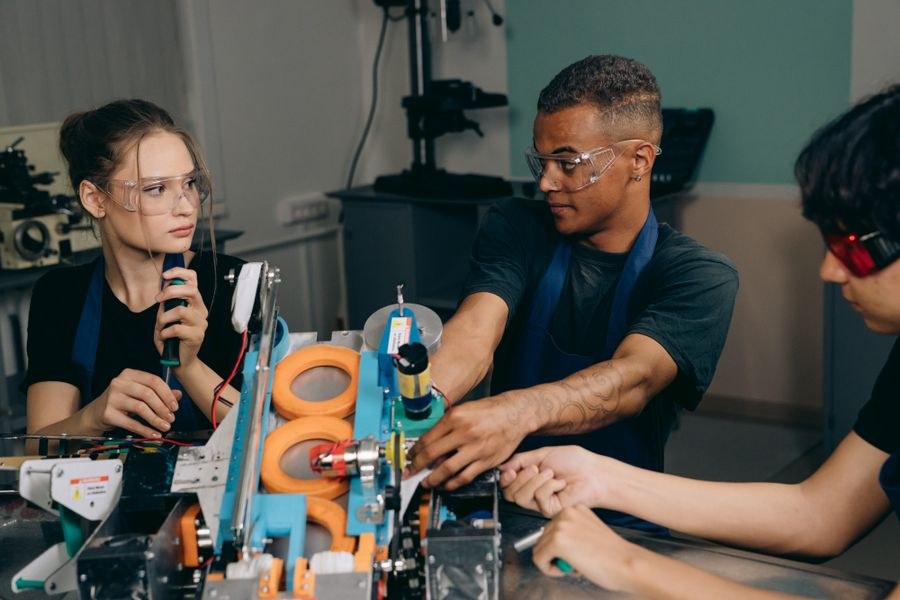

EL FUTURO SE CONSTRUYE EN LA REGIÓN
Talento local.
Posibilidades
sin límites.
Conectamos la educación técnica con las empresas que impulsan nuestra región.
en una misma red
el talento técnico
diurna y nocturna
su empresa
ENCUENTRE SU PRÓXIMA CONEXIÓN
Mucho talento.
Un mundo de oportunidades.
Desde la tecnología hasta la gastronomía, descubra las áreas en las que se forma el talento de nuestros centros.
Fotografías ilustrativas de las áreas de formación.
OFERTA EDUCATIVA TÉCNICA
Encuentre la especialidad
que su empresa necesita.
Explore por nombre, centro, área o jornada. Cada oferta conserva el período informado por su institución.
La oferta es informativa. Confirme con el centro la apertura de grupos y los requisitos. Liberia muestra su oferta general; su ficha incluye la selección de 2027.
NUEVE CENTROS. UNA VISIÓN COMPARTIDA.
Conozca nuestra red.
Cada centro tiene una identidad propia y oportunidades para colaborar. Explore su oferta y converse con su coordinación.

CONOCIMIENTO QUE SE CONVIERTE EN ACCIÓNCORVEC NAHUATL CHOROTEGA
Una región que aprende.
Una región que avanza.
La educación técnica abre oportunidades para las personas y para el sector productivo. Este portal reúne la oferta de los centros participantes y facilita el encuentro con sus equipos de coordinación.
01 Formación conectada con el trabajo
02 Centros con distintas especialidades
03 Colaboración entre educación y empresa
CREZCAMOS JUNTOS
Su empresa también
es parte del futuro.
Hay muchas maneras de colaborar. Elija una y encuentre el contacto del centro con el que desea vincularse.